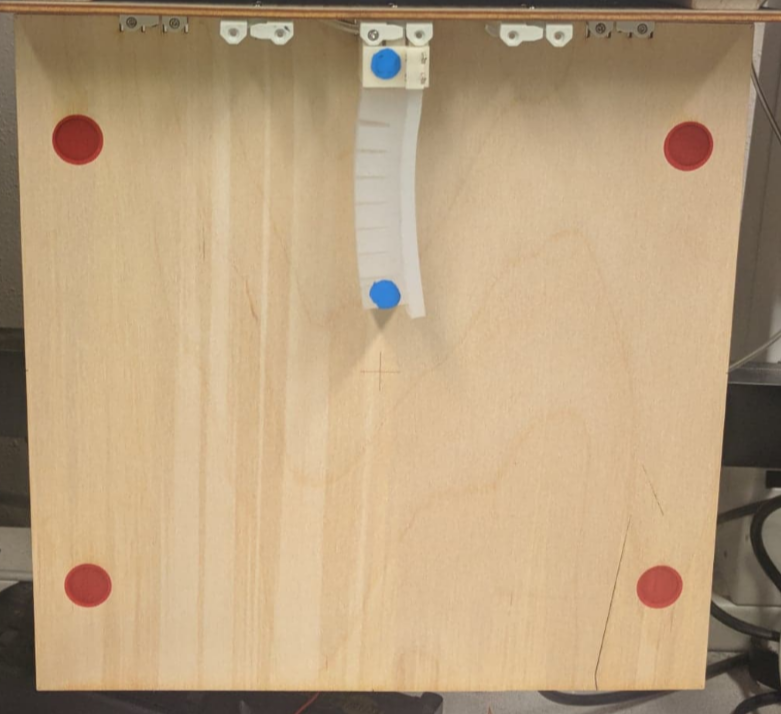
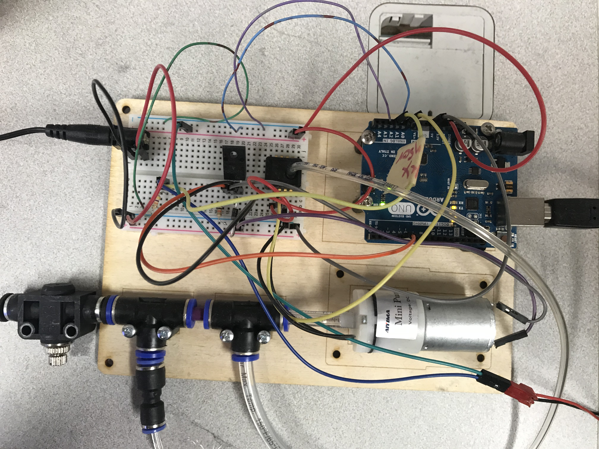
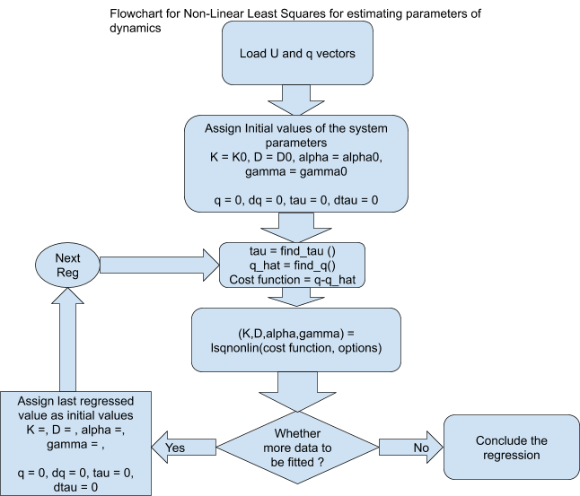

Implementation


The soft gripper project came with a hardware setup from the EECS 106B lab 4, which includes: an Arduino, bend sensor, flex sensor, a pump to provide pressure to the finger, the soft gripper (DragonSkin-30), a board with four dots (in order to use homography), and a depth camera (Intel Realsense camera). Our team also ordered a force sensor as a part of the second half of our project which was to create a model of the external force exerted by the finger at any given angle (though, we did not get to fully complete this goal).
Minimal hardware setup was required for our implementation; however, our software was essential for our data analysis, and finger controller. Our software was broken up into five components: the vision algorithm, flex to angle model and data analysis, using nonlinear least squares regression in MATLAB, MATLAB data analysis and processing, and developing a PID controller.
Our vision algorithm significantly improved the vision component of lab 4 of EECS 106B. The lab requires students to use a camera to gather data on the angle corresponding to different flex values, which is used to create a model of flex to angle. Angle measurements are made by tracking the position of two blue dots on the base and tip of the soft finger via a four point homography. The previous vision algorithm gave poor data for creating the model in that the algorithm assumed that the two blue points used to define the position of the finger were coplanar to the plane defined by the four red points actually used in homography behind it (which is incorrect). These issues caused the angle data measured by the camera to have differences, depending on where the camera was physically placed, making each group of student’s data largely different from one another. The vision algorithm we implemented fixed these issues, creating much more accurate data. The new vision algorithm worked by defining the positions of the red and blue dots in a 3D space rather than a 2D one; this can be thought of as having a coordinate frame attached to the top left red dot with the z-axis going into the board and x-axis in the direction of the top right red dot. Thus, the two blue dots have a -z coordinate value, which we assume to be the same. Our four point homography was now used in the process of converting pixel coordinates from the viewed image to real 3D coordinates in the defined reference frame. By assuming the finger tip has the same normal vector to the board plane as the base and that the base has a fixed position relative to the board, we were able to use pixel coordinates of the tip dot to calculate it’s actual position. We also fixed some issues with actually detecting the four red dots and two blue dots; we found that the HSV masks did a good job of picking up where the blue and red points were, but also picked up many other sources. An erosion filter did a good job of mitigating this, as well as successive dilation to re-enlarge the actual points. After implementing and applying a few corrections to the new algorithm, the physical placement of the camera did not change the data gathered by the camera (within a certain range).
The data analysis pipeline that we developed aimed to accurately relate flex to angle. We experimented with fitting first and second order polynomial models of flex to angle using least squares, and saw that the second order model seemed to work best. However, before we could do so, we had to clean the data by removing transient values to only consider steady state data for our regression, which we considered to be the most accurate and reliable. Numerous solutions were developed. One way to remove transients was to remove points that had a large slope between them over an appropriate time step. Another strategy was to use K-MEANS clustering to obtain two steady state values, one where the angle was high and another were the angle was low. However, the best method was to simply look at which values looked to be in steady state and take the average of those values. This analysis was done in Python with the assistance of Pandas and Numpy, and the regression results were used in the controller, as that’s where we needed to try to estimate the finger state off of the measured bend sensor value.
We were given MATLAB starter code for developing a model with data, however, there was an issue of concatenating data across several csv files to make more organized training and test data. To solve this, we streamlined the entire process of reading in a csv file and organizing it into training and test data sets as well as providing easy visualization through creation of several matlab scripts. When given a folder of csv files as returned by the python data collection script, one script would conveniently put the data into a 2D cell array of tables. This data structure allowed very easy access of of a cell and the table of data within it. Next, we had a script made just for splitting up the read in data into training and test, as so desired by a user. The output of this script was a table of concatenated trials, where each trial may be taken in actuality several minutes apart, but by joining together datasets at positions where the finger was at the rest position in both trials, we were able to adjust the time values of these trials so that they could appear as one continuous datastream. In order to gain insight into the behaviour of our system, a data visualization script that allowed for easy visualization of datasets outputted by other formatting scripts was able to highlight much key information, such as the overdamped behaviour of the soft finger, the degree to which sampling rates differed from the camera and from the arduino, and most unfortunately, the severity of the flex sensor drift issue. Finally, a MATLAB script was written to take parameters determined by the regression and use those to calculate PWM values to provide a certain trajectory, this is how we were able to make the trajectory model for the controller.
 The nonlinear least squares tool in MATLAB was used for fitting the given dynamics model. Although the original plan was to have developed a model between flex measurement and angle and then do any further data analysis on the angle values predicted from flex data, our flex model turned out to be pretty unreliable at steady state, due to issues of drift in the flex sensor. Thus, we ended up sticking with the angle data computed through our vision for the purpose of fitting the dynamics model. We employed the ‘trust region reflective’ algorithm in MATLAB which defines a local trust region where it tries to find solutions using a simplified relationship. Having organized collected data into nice training sets, we fed that data into the MATLAB nonlinear least squares function using the previously defined cost function that computed the difference between provided position and finger position as simulated by the model parameters which are being determined by regression. We noticed that the K, D, α, and γ outputted by the regression created a model that either seemed to fit data from high or low PWM well, which is to be investigated.
Developing the controller allowed us to see how our modeling efforts actually held up. We designed the controller to take in a user angle, user time, and user run-time. The goal was to have the finger reach the desired user angle in the user time, oscillating over the run-time. We created a sinusoidal trajectory to model where the finger should be in some time along the given interval, and used the flex to angle model we generated to track the actual angle of the finger along the given interval. The trajectory was created by sampling the sin function at 10Hz and then linearly interpolating between sample points to determine the appropriate angle position for a given time. The exact implementation was to take the system’s current time elapsed, find the closest via points before and after it (using the known sampling rate to determine this quickly), and then determine where on the line between the points to estimate the current desired position. We made an error term by subtracting the angle from the sin trajectory and the actual angle measurement. For the derivative term and flex data, we added a low pass filter due to the large amount of noise produced by the flex data. Using flex data from the Arduino, we were able to get the finger to move, but not very accurately. We tuned the proportional, integral, and derivative term to make more accurate movement, which somewhat worked. A feed forward term was then added, utilizing the dynamics model of the finger (and using constants given by our nonlinear least regression). The feed forward term significantly increased the accuracy of the finger and changed our PID terms to only integral and windup terms since the proportional and derivative terms did not increase the accuracy.
In summary, everything worked in conjunction as follows: first, the vision algorithm is used to gather data for the flex to angle model. The data analysis was used to make the flex to angle model more accurate by removing transient data and finding the best coefficients to the flex plus flex squared relationship. This flex to angle model is utilized in all other components of the project, as the arduino measures flex data and we can use this model to accurately predict the angle correspondence. A nonlinear least squares regression is run to find good coefficients for the feed forward term of the controller. The MATLAB data analysis is used to find a good trajectory model for the controller and was used to find issues with the flex sensor, which if fixed, could lead to even better results. The controller was made up of the flex to angle model, finger dynamics, and trajectory function, which all together created a decently accurate controller, where the accuracy lowers at lower PWM values.